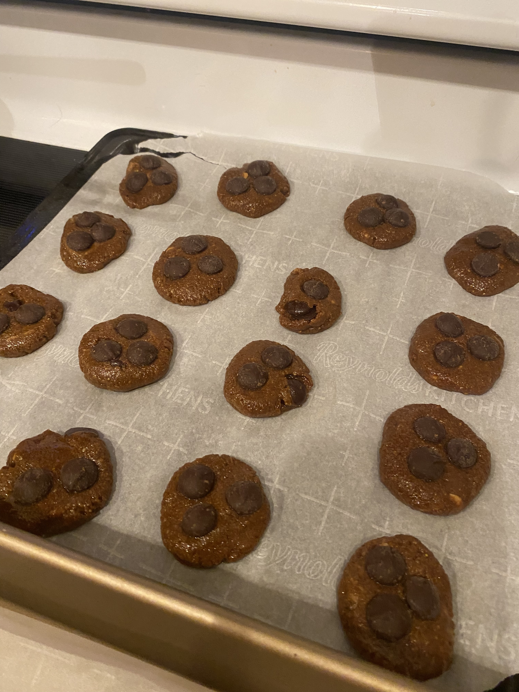

Protein Cookies

Organic Peanut Butter Chocolate Chip Cookies
These are delicious protein packed cookies.
Made with a few simple ingredients you probably already have in the pantry.
Ingredients
- 1 cup of organic peanut butter. (You can substitute for any nut butter you like).
- 1 cup of coconut sugar. (You can substitute for any sweetener you like).
- 1 egg
- 1 scoop of protein powder. (In my exerience the flavor of protein powder didn't change it much).
- 1/2 cup of organic dark chocolate chips. (You can use milk chocolate chips of course!)
Steps
- Grab a bowl, and add everything to your bowl.
- Mix it all together with a mixer.
- Once everything is combined, roll it into a ball.
- Separate that ball into two balls.
- Separate those two balls into halves, now you have four balls.
- Keep halving each ball until you have enough cookie-sized balls.
- Place on a pan at least an inch apart.
- Bake at 350 degrees for 15 minutes.
Enjoy!
Home